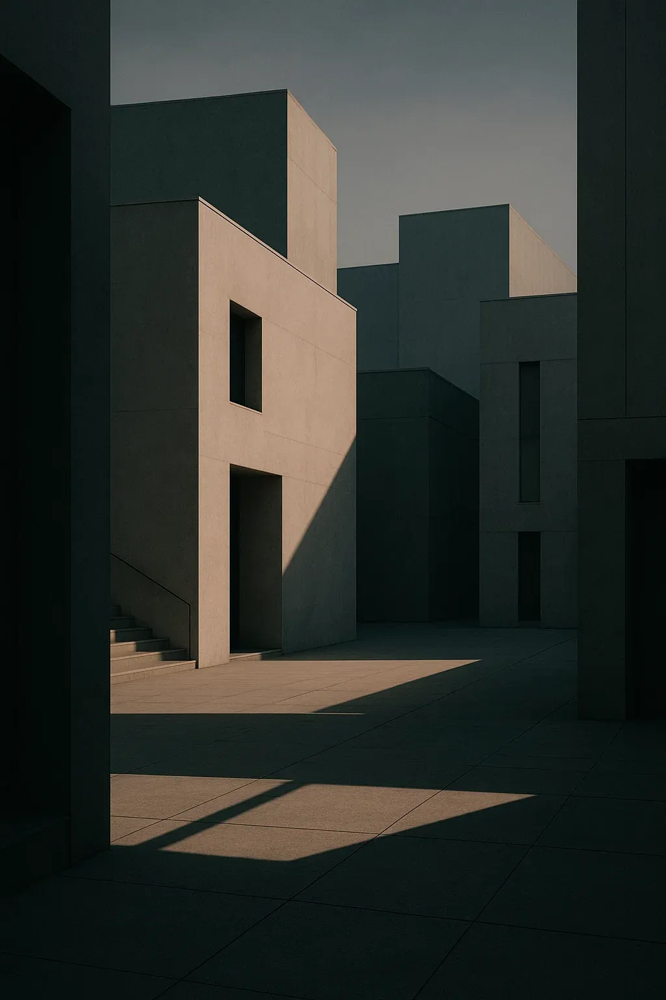
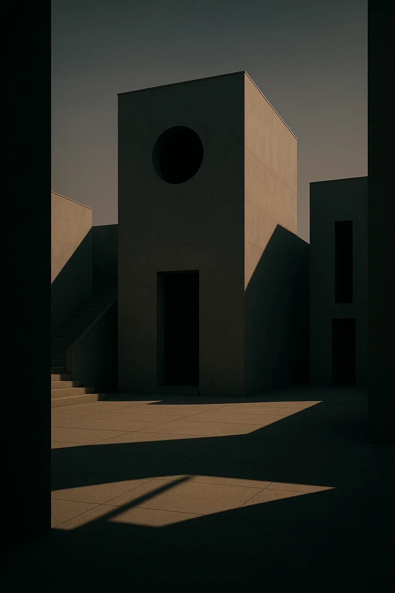
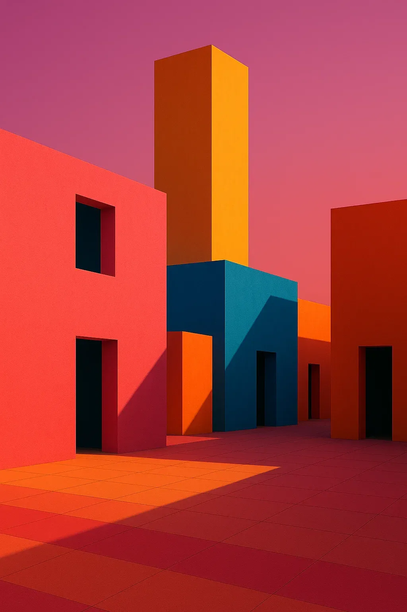
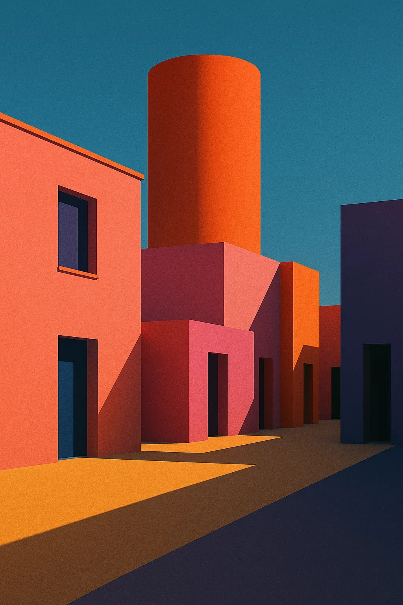

← Go back
Futuristic Portraits Soft Tech and Human Glow
A visual study in minimal futurism — merging soft light, clean design, and calm expressions to explore the intersection of human emotion and synthetic style.



